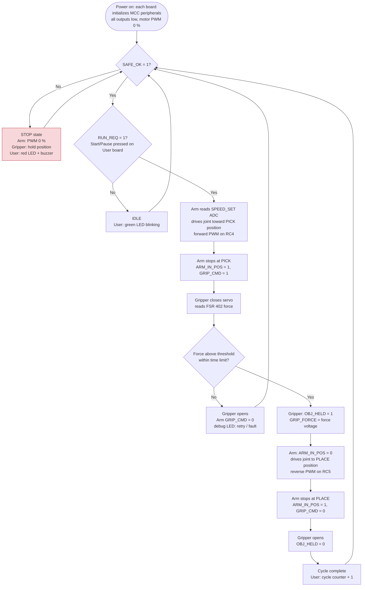

Software Proposal
Simple Educational Robotic Arm — Team 107
Overview
The software controls the movement, positioning and gripping of the Simple Educational Robotic Arm. Each of the three boards (Arm Motion Control, Gripper & Object Handling, User Controls & Safety) runs its own firmware on a PIC18F57Q43 Curiosity Nano. The firmware is written in C with MPLAB X, XC8 and MCC Melody.
The three programs never send messages to each other. Each one reads and drives the eight parallel signals of the team ribbon cable, where every signal has one wire and one driver. A pick-and-place cycle is a handshake on those wires. The flowchart of one cycle is on the Process Diagram page, and the signal definitions and timing are on the Message Structure page.
Software Objectives
The proposed software will:
- Initialize each board's peripherals with every output low and the motor and servo stopped, so the system powers up safe.
- Let the user start, pause and stop the sequence and set the arm speed from the User board.
- Drive the arm joint between a pick position and a place position, with speed set by PWM.
- Close the gripper until the FSR 402 shows enough force, then report that the object is held.
- Sequence the arm and gripper through the ARM_IN_POS → GRIP_CMD → OBJ_HELD handshake.
- Stop all motion whenever SAFE_OK goes low (E-stop pressed, fault, or cable unplugged) and show the state with LEDs and the buzzer.
Firmware Structure (all three boards)
Every board uses the same simple structure, so any teammate can read or stub another board's code:
- MCC-generated drivers: clock (HFINTOSC 64 MHz), pins, ADC, PWM, DAC and UART, depending on the board.
- One
mainloop with a state machine:INIT → IDLE → RUN states… → STOP. The loop runs every 1 ms from a timer tick. - Safety check at the top of every loop: if SAFE_OK = 0, the board goes to
STOPbefore doing anything else. - Debug output: a debug LED and an optional
printfover the Nano's virtual COM port (UART). This UART goes to the PC only, not to the other boards.
Proposed Software Operating Sequence


Step 1: System Initialization
Each Curiosity Nano runs SYSTEM_Initialize().
- Motor PWM and servo outputs start stopped.
- All ribbon outputs start low.
- The Arm board's H-bridge inputs are also held low by pull-down resistors during reset.
Step 2: Wait for Safe and Run
The Arm board waits until SAFE_OK = 1 and RUN_REQ = 1. Both come from the User board: the E-stop is released and the Start/Pause button has been pressed. While waiting, the User board blinks the green LED.
Step 3: Safety Check (every loop)
On all three boards, SAFE_OK = 0 forces the STOP state:
- the Arm board sets both PWM outputs to 0 %;
- the Gripper board holds its position;
- the User board turns on the red LED and sounds the buzzer.
After SAFE_OK returns, the user must press Start again; the boards do not resume on their own.
Step 4: Arm Movement to Pick
The Arm board reads SPEED_SET with its ADC and drives the joint toward the pick position with forward PWM. The joint runs at the set duty cycle for the programmed move time, then the board stops the motor and sets ARM_IN_POS = 1 and GRIP_CMD = 1.
Step 5: Gripper Operation
When the Gripper board sees GRIP_CMD = 1, it sends servo pulses to close the Kitronik Klaw Mk2.
Step 6: Force Sensor Measurement
The FSR 402 signal is buffered by the MCP6004 and read by the Gripper board's ADC. The board also outputs the force as a voltage on GRIP_FORCE, from its DAC, so the User board can display it.
Step 7: Gripper Control
- Force reaches the threshold: the Gripper board stops closing and sets OBJ_HELD = 1.
- No grip within the time limit: the gripper opens. The Arm board then clears GRIP_CMD and retries once; if the retry also fails, it signals a fault on its debug LED.
Step 8: Move to Place and Release
When the Arm board sees OBJ_HELD = 1:
- It clears ARM_IN_POS and drives the joint to the place position with reverse PWM.
- It sets ARM_IN_POS = 1 and GRIP_CMD = 0.
- The gripper opens and clears OBJ_HELD.
Step 9: Repeat
The User board counts completed cycles from ARM_IN_POS and OBJ_HELD. While RUN_REQ stays high, the cycle repeats. Pressing Start/Pause again clears RUN_REQ and the arm stops at the end of its current move.
Subsystem Communication and Software Responsibilities
System Architecture
Each subsystem is responsible for its own sensors, actuators and local control. Only the eight ribbon signals cross between boards. Each board reads every signal it needs and drives only its own.
Subsystem 1: Arm Motion Control (Yixiang Ren)
| Function | Peripheral / pin | Firmware behavior |
|---|---|---|
| Joint motor forward / reverse | PWM1_16BIT outputs on RC4 / RC5 → FAN8100N | Only one output is non-zero at a time. Duty cycle is scaled from SPEED_SET. Both outputs are 0 % in STOP. |
| Speed request | ADCC on RA1 (SPEED_SET) | Read every move; averaged over several samples |
| Ribbon inputs | RD0 SAFE_OK, RD1 RUN_REQ, RD3 OBJ_HELD | 10 kΩ pull-downs on the board, so a missing cable reads 0 |
| Ribbon outputs | RD2 GRIP_CMD, RD4 ARM_IN_POS | Driven by the state machine |
| Debug | RE0 LED, RE1 button (weak pull-up), UART1 to PC | Button steps one move at a time in test mode; the LED shows the current state |
Subsystem 2: Gripper & Object Handling (Canyon Miller)
| Function | Peripheral / pin | Firmware behavior |
|---|---|---|
| Gripper servo | PWM on RB3 (50 Hz servo pulses) | Open / close on GRIP_CMD; hold position in STOP |
| Grip force | ADC on RA0 (FSR 402 through MCP6004) | Compare with a calibrated threshold; stop closing at the threshold |
| Force output | DAC1 on RA2 (GRIP_FORCE) | Voltage proportional to measured force |
| Ribbon inputs | RD0 SAFE_OK, RD2 GRIP_CMD, RD4 ARM_IN_POS | Pull-downs, so a missing cable reads 0 |
| Ribbon output | RD3 OBJ_HELD | 1 while the object is held |
| Debug | RF4 LED, RB2 pushbutton | Manual open / close test |
Subsystem 3: User Controls & Safety (Dunyue Yang)
| Function | Peripheral / pin | Firmware behavior |
|---|---|---|
| Emergency stop | RB0 input (normally closed contact) | Opening the switch sets SAFE_OK = 0 immediately |
| Start / Pause | RB1 input | Debounced; toggles RUN_REQ |
| Speed knob | ADC on RA0 (10 kΩ potentiometer) | Filtered and sent to the Arm board as SPEED_SET from DAC1 on RA2 |
| Status | RB2 green LED, RB3 red LED, buzzer through ULN2003A on RC4 (PWM) | Green: running / idle; red + buzzer: stop or fault |
| Ribbon outputs | RD0 SAFE_OK, RD1 RUN_REQ, RA2 SPEED_SET | SAFE_OK is driven high only while the E-stop is released and no fault is present |
| Ribbon inputs | RD3 OBJ_HELD, RD4 ARM_IN_POS, RA1 GRIP_FORCE (ADC) | Used for the cycle counter and the status display |
Communication Interface
The boards communicate over the 8-pin ribbon cable with one signal per wire, at 0 / 3.3 V logic. The two analog signals are 0–3.3 V voltages. There is no serial protocol between boards: a signal's level is the message. The full table of signals, drivers, meanings and timing is on the Message Structure page.
| Pin | Signal | Driver → receiver(s) |
|---|---|---|
| 1 | SAFE_OK | User → Arm, Gripper |
| 2 | RUN_REQ | User → Arm |
| 3 | GRIP_CMD | Arm → Gripper |
| 4 | OBJ_HELD | Gripper → Arm, User |
| 5 | ARM_IN_POS | Arm → Gripper, User |
| 6 | SPEED_SET (analog) | User → Arm |
| 7 | GRIP_FORCE (analog) | Gripper → User |
| 8 | GND | common |
Software Design Decision-Making
Why each board runs its own simple state machine. Each teammate can write, test and debug their firmware alone, with jumpers standing in for the other boards. A state machine with named states (IDLE, MOVE_TO_PICK, WAIT_GRIP, MOVE_TO_PLACE, RELEASE, STOP) maps one-to-one onto the process diagram, so the code is easy for a beginner to follow (PR-15, PR-16).
Why parallel signals instead of messages. The team first considered UART messages such as MOVE and GRIP_OPEN between boards. They were replaced with the 8-pin parallel signals for three reasons:
- no parsing, framing or checksum code is needed, and each board's link code is a few pin reads and writes;
- every signal can be checked with an LED or a meter during bring-up (PR-18);
- a crashed board or broken cable shows up as a 0 on its wires, which the receivers already treat as "stop" (PR-12).
Why the safety check comes first in every loop. Stopping does not wait for the current move to finish or for a message to arrive. SAFE_OK is a hardware level that every board reads at least once a millisecond.
Why the arm uses timed moves for now. The first prototype has no joint position sensor. The Arm firmware keeps the move time and duty cycle as named constants, so they are easy to tune. A future encoder or potentiometer on the Arm board's expansion header can replace the timer without changing the rest of the state machine (PR-11).
Relationship to Product Requirements
| Requirement | How the software meets it |
|---|---|
| PR-01 Pick-and-place sequence | The state machine and the ARM_IN_POS / GRIP_CMD / OBJ_HELD handshake run the full cycle |
| PR-02 / PR-04 Repeatable, stable motion | Fixed move times and duty cycles; the ADC speed value is averaged; the cycle repeats without recalibration |
| PR-03 / PR-08 Gripper control | Closing stops at a force threshold, and the gripper opens on command |
| PR-07 / PR-16 Programmable movement | Speed from the knob; move times and thresholds are named constants a student can change and test |
| PR-12 Stop robotic motion | SAFE_OK checked every loop on every board; restart needs a deliberate Start press |
| PR-15 Beginner accessibility | One simple state machine per board, MCC-generated drivers, LED and serial debug output |
| PR-18 Troubleshooting | Debug LEDs, test mode on the Arm board's debug button, and signals that can be checked with an LED or a meter |
Software Development Status
The MCC configuration for each board is set up, including the Arm board's PWM, ADC and UART. The state machines described here are the proposed design. Move times, force thresholds and debounce times will be set during bench testing, and the handshake will be verified when the three boards are connected.